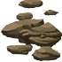
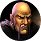

Щебень
Предметы / Добыча
Открыть в интерактивной вики →
| Вес | 20 |
|---|---|
| Цена | 0 |
Описание
Менее продуктивный источник  Камень. Обмен у
Камень. Обмен у
Камень. Обмен у 
Каменщик| Менее выгодный источник каменных блоков. |
Рецепт
Обмен
Где найти
Применение
|
Как добыть
| Сбор в локации: |